vivian.liu67@gmail.com
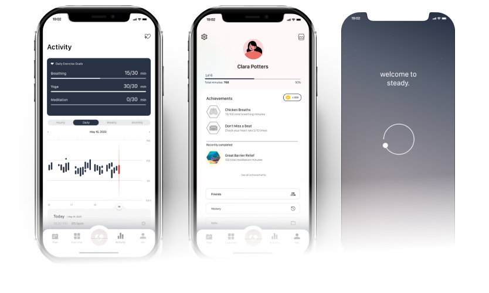
Steady
app design • 2-week design sprint
A heart-rate monitor that promotes healthy daily meditation and breathing goals.
Your heart ♥ is one of the most important parts of your body.
Steady is my unique take on heart rate monitoring as a tool for reducing daily stress and anxiety. My task was to identify a problem in someone’s daily life themed around healthy wellbeing and create a digital solution.
YEAR
Oct 2021
TEAM
Vivian Liu, solo designer
ROLE
UX/UI
User Interviews
App Design
Prototyping
Exploration
What is Steady?
An app for your heart.

Steady is a heartbeat monitoring app for young adults, to help improve mindfulness by assessing your heart-rate in real-time using a compatible wearable device and offering exercises beneficial for your mental health.
Heavy workload and higher standards often leads to stress and anxiety, especially in young adults navigating a busy, hectic society. Steady tracks the user’s heart rate in real-time to help visualize anxiety levels, target specific triggers, and encourage mental exercises.

Picture taken in Banff National Park, selected for my moodboard.
The Problem
Prompt Overview
2-week design challenge
My initial prompt was to design an app themed around healthy wellbeing that solves a problem for my target userbase.
I took the task a step further and found a person to be the center of my app. My friend often struggled with stress, anxiety, and work-life balance. He often feels depressed and/or stressed from his studies and juggling a part-time job with full-time study. He wants to prioritize his mental health but doesn’t have much spare time. I started with an interview to try and find an app solution for his problem.
The User
This One’s for You, Ben
Benjamin (real name kept private) is a 4th year, full-time Psychology student at the UWaterloo. When he isn’t studying, he works part-time at a local Chinese restaurant. He also exercises daily and enjoys spending free time on video games, cooking, and hanging out with friends. Mental health is a priority for him; his current mindfulness routine is limited to exercising, cleaning, and staying healthy. He has used mindfulness apps in the past but none at the moment.
Behaviours
- Searches for medical information or advice mostly on Google.
- Spends a lot of time in class or studying, maintaining a high GPA is important to him for grad applications.
- Volunteer student counsellor and mentor, likes to help his fellow students succeed.
Motivations
- Cost and time motivated - will always try to save time and money.
- Results-driven, especially in terms of “hard work gets good grades”.
- Likes to connect with others and draws encouragement from his peers.
Needs
- Lower his stress-levels so he can be more productive.
- Wants to improve his mental health.
- Feels like the anxiety and pressure to succeed are dragging him down.
- Wants someone to talk to.
- Hard for him to open up about his feelings.
Ideation
How might we redesign the heart-rate app experience for younger users to bring them value and improve their wellbeing?
There is no doubt that mindfulness training and meditation are effective exercises with many benefits like improving mood, reducing irritability, and managing stress. But with 1 in 5 Canadians still suffering from mental illness every year [1], of which young people aged 15 to 24 account for a higher percentage than any other age group [2], how can we harness new technology to help younger users before they are overwhelmed by their stress and anxiety?
I’ve witnessed first-hand how a heart-rate monitor on smartwatches that connects to a mobile app has helped my older parents and led to improvements in their health.
In the United States, 62% of smartphone users find important health information on their phones. There are over 100,000 health apps available for download and over 400 types of wearable devices for tracking your health [3]. However, most existing heart rate related mobile apps focus on cardiovascular diseases and their risk factors (obesity, smoking, diabetes, etc.) [4].
My friend, a young adult in his early 20s, has never had any cardiovascular health issues and does not need to track his health in this area. But he did point out that when he feels stressed or anxious, the first signs are usually increased heart-rate, sweating, and dizziness.
To assume the signs are the same for everyone would be a stretch but this made me think:
First interview with Ben, we talked about his current routine and goals. Also asked about his experience with mindfulness apps.
Can we harness this technology to detect spikes in heart-rate and help younger users before they become overwhelmed by their stress and anxiety?
Citations
[1] Smetanin et al. (2011). The life and economic impact of major mental illnesses in Canada: 2011-2041. Prepared for the Mental Health Commission of Canada. Toronto: RiskAnalytica.
[2] Pearson, Janz & Ali (2013). Health at a glance: Mental and substance use disorders in Canada. Statistics Canada Catalogue no. 82-624-X.
[3] Kelli, H. M., Witbrodt, B., & Shah, A. (2017). THE FUTURE OF MOBILE HEALTH APPLICATIONS AND DEVICES IN CARDIOVASCULAR HEALTH. European medical journal. Innovations, 2017, 92–97.
[4] Li, K., White, F. A., Tipoe, T., Liu, T., Wong, M. C., Jesuthasan, A., Baranchuk, A., Tse, G., & Yan, B. P. (2019). The Current State of Mobile Phone Apps for Monitoring Heart Rate, Heart Rate Variability, and Atrial Fibrillation: Narrative Review. JMIR mHealth and uHealth, 7(2), e11606. https://doi.org/10.2196/11606
Research
Competitive Analysis
There are many mental health apps in the market but none have integrated heart-rate monitoring technology.
- Moodfit, Headspace, and Calm both offer exercises for users to complete on their own, while BetterHelp and Sanvello focus more on providing licensed therapy from the convenience of a mobile phone.
- BetterHelp, Sanvello, and Calm are all very expensive requiring a monthly subscription plan of several hundreds of dollars per year, making them less accessible options for younger students and adults with less disposable income.

Ben doesn't have the time or money for the complicated process of live therapy sessions. The free app options also all fell short in one aspect or another, for example Moodfit suffers from high abandonment as it does not offer enough motivation for users to return every day and complete the mood tracker.
When I asked Ben what experience he had with health apps, specifically mindfulness apps, I found:
- Ben has tried 2 apps, both on recommendation from his friends. He does not actively search for a mindfulness app, because of time, poor experiences, and lack of motivation. But, he is willing to try a if someone recommends it and it is free.
- He tried Calm but quit by the end of the 7-day free trial from lack of motivation to log in every day. He found their meditations were long and he didn’t want to pay for the app.
- Also tried Headspace for around a month but didn’t want to continue paying the expensive subscription. Since the website is free, there's no pressing need for the app version. He found that he liked the different meditation techniques but lacked motivation to use the app every day.
From Ben’s behaviours, motivations, and needs, I sensed he would benefit from a free to use app that offers goal-setting, positive reinforcement, and performance visualizations on top of exercises with rewards to encourage continued use.
Psychology
A little psychology goes a long way
My hypothesis is that if you reward players with purposeful, self-accomplishments they will feel motivated to continue their routine. Things like physical exercise have visible effects on one's body, making it much easier to visualize the rewards of their efforts. However, the health benefits of mindful exercises are much more difficult to quantify and imagine.
01
The current popular app model involves a task-based system with progress tied around the completion of repetitive, chore-like routines. This is beneficial in the short-term as users feel a sense of accomplishment for finishing an exercise, but this reward structure is temporary and over time the same feeling of daily completion diminishes in value.
02
Many reviews on existing apps also mention that after a while the exercises feel too long or repetitive. When users feel like they are no longer working on themselves and rather completing tasks as part of a routine chore, they start to procrastinate and lose interest.
03
Ben also felt pressured to open the app every day to complete his exercises and disappointed when he doesn’t. His lack of motivation is further emphasized when he misses multiple days until he feels like he is too far behind in his schedule to make back his days. Hence, he gives up on most apps before any substantial impact could be observed.
Visualizing your heart rate improve as you complete exercises could prove to be a better intrinsic reward and can offer a sense of personal accomplishment and happiness that is sustainable long-term.
Task-based daily goals are constantly resetting and diminishing in return. In contrast, personal growth is more beneficial in the long-term and thus more sustainable to retain users. Additionally, daily reminders can put additional pressure on the user to complete their daily tasks.
I addressed these issues when designing the features for Steady. The app would notify the user only when it detects a high spike in their heart rate to help them calm down. For monthly routines, instead of setting a number of meditations, they can set goals related to their heart rate such as reducing the number of major spikes compared to their previous months.
Business Strategy
Free to Use App Model
In addition to the design, I explored the important topic of generating revenue. It is easy to market a “free” app to cost-motivated users, but in practice there still needs to be a revenue process.
Steady’s main feature is the heart rate monitor which gets its data from different sources, such as manually measuring your heart rate using the smartphone device’s built in camera feature or from an external device. We can sell these external devices to use with the app in the form of a watch or a ring. This is obviously a very surface level idea that will require more research but for now it is out of the scope of this UI/UX design project.
Styleguide
Steady is more than a heart rate monitor. It’s about loving yourself and embracing your mental wellness.
01
Colour Scheme


02
Typography

03
Elements

Vector images and icons are hand-drawn by me in Illustrator!
Storyboard

Ben is studying alone for an important midterm exam.

His vision begins to blur and he can feel his chest pounding. He starts to panic.

Ben’s phone alerts him of his critical stress levels by detecting his increased heart rate.

He opens the app and starts a breathing and meditation exercise.

He watches as his heart rate settles while completing the exercise.

Ben feels rewarded for successfully managing his stress and returns to studying.
Content Mapping

Design
Wireframe

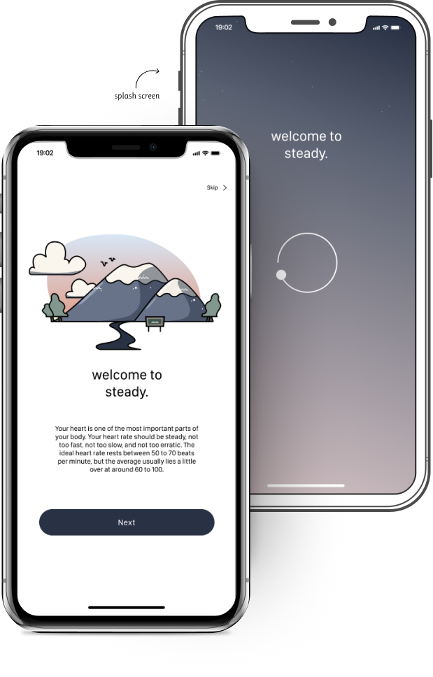
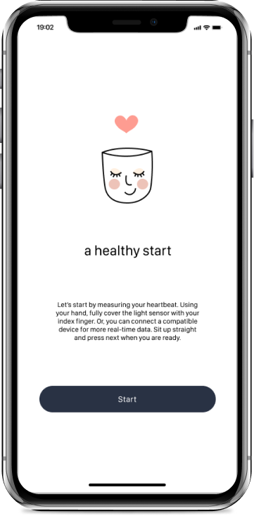
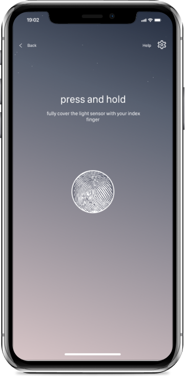
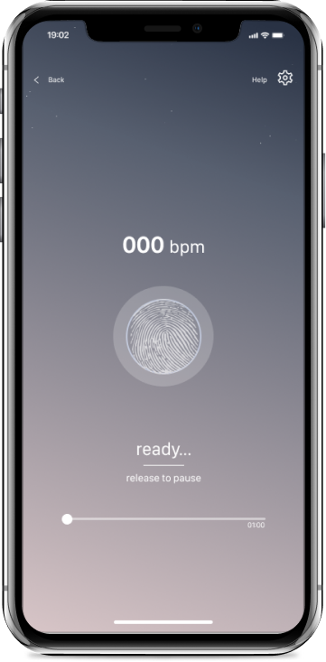
Sign-up & Log-in
Collected personal information is used for analytical purposes and tailoring recommendations only.
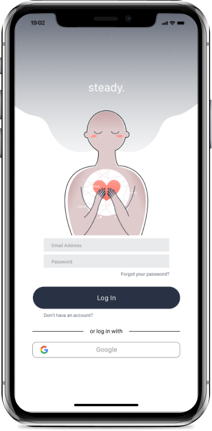
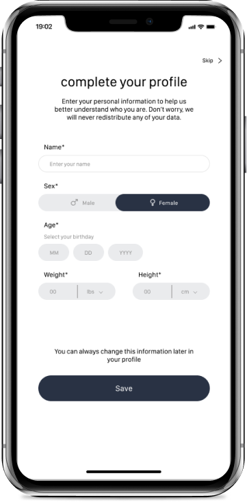
Heart Rate Activity
Visualizing the data collected from measuring heart rate or from an external device.
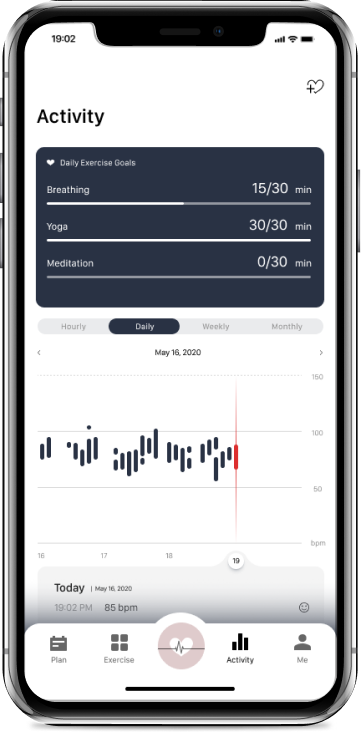
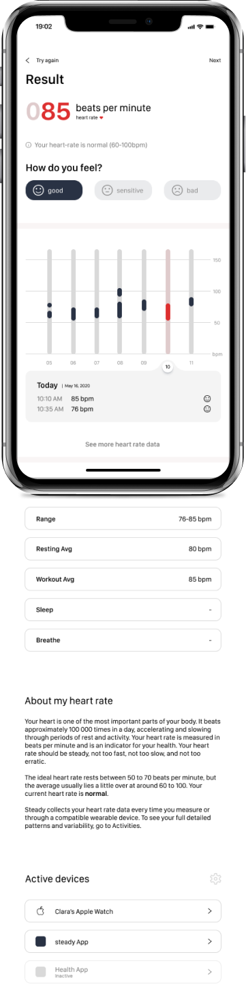
Exercise Your Mind
Breathing, meditation, and yoga exercises designed to take users away from the daily hectic of life.
Breathing exercises are the first recommendation to help users calm down when the app detects a spike in their heart rate.
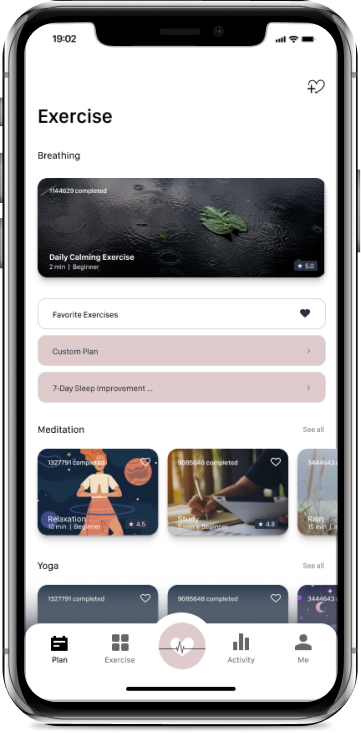
Or create an exercise plan to help you stay on top of your daily mindfulness routine. Make your own or choose from customizable presets.
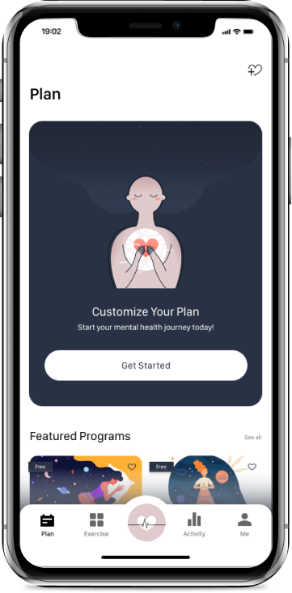
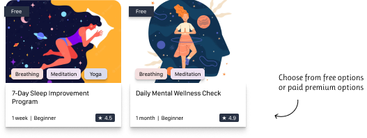
Don't Miss a Beat
Set up a personal profile to track exercise minutes, achievements, friends, notifications and more.
As you use the app, you earn coins which can be used to unlock premium features like profile icons, exercises, and achievements.
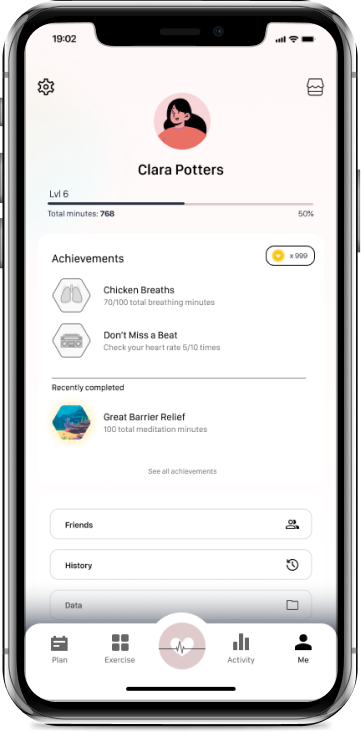
Reflections
How did Ben respond?
When I showed Ben the detailed wireframes he was very impressed with the way the exercises were integrated with the heart beat monitoring system. He enjoyed the achievements aspect and friend system because it set placeholder goals for him to play with until he feels comfortable enough to create an exercise plan of his own. Since he is already exercising physically every day, he thinks he would be interested in buying a wearable device to enable the real-time heart rate tracker.
On the other hand, he was concerned about the level of detail for the exercise plans and how much he will be able to customize them. He also felt it would help him evaluate whether he would like the app if he had example exercises to test out.
Areas of improvement
I only interviewed one potential user for this project but in a more practical situation I will need to consider more user types within my target market, especially all the edge cases like: users who can’t use their finger to measure heart rate, users on devices that do not have a built-in heart rate reader, or users who do not experience elevated heart rate when stressed or anxious.
Final thoughts
This project was fun and challenging for me because I had very limited time to complete all the necessary research but altogether I am very happy with what I accomplished. The topics of psychology including operant conditioning, reward-based systems, and intrinsic vs. extrinsic rewards are very interesting to me and I enjoyed finding ways to incorporate these theories to improve my solution for Ben. I am grateful to my friend for the interview and for speaking to me about his struggles with stress and anxiety.
Although this app is purely theoretical for now, I think it would be interesting if I could continue this project one day and develop my prototypes into something that many people can use to better their wellbeing.